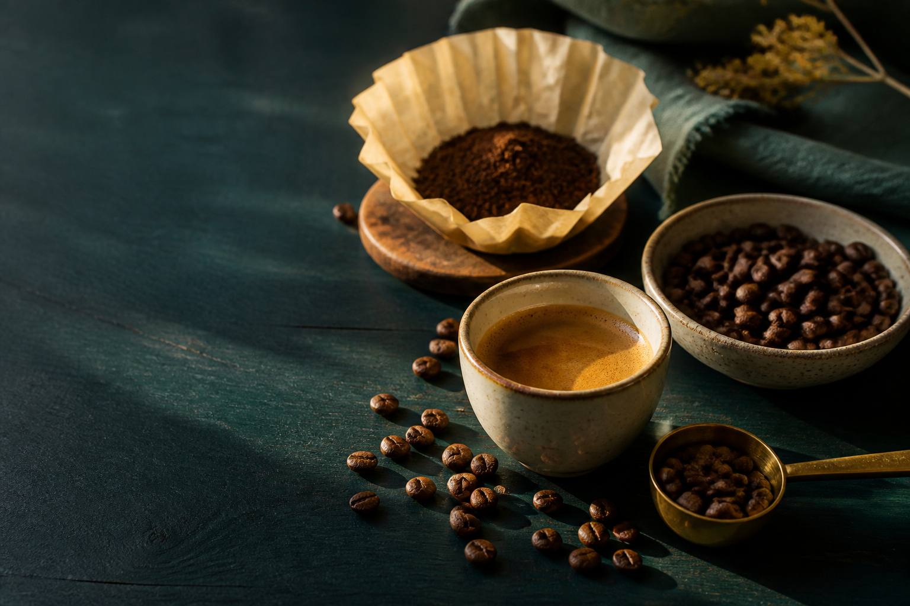

1998

УЖГОРОДСмак змінювався разом із людьми, які поверталися.
Medelin працює з кавою з 1998 року. Перший заклад в Ужгороді відкрився у 2001 році. Сьогодні каву обсмажують в Україні та допомагають підібрати помел під ваш спосіб приготування.
Історія Medelin ↗